2.1. Semi-analytical methods for Bragg fiber modes#
The Bragg fiber is a fiber consisting of concentric rings of dielectric materials. Similarly to the step-index fiber, we model the refractive index of a Bragg fiber as piecewise constant. What separates the Bragg fiber from the step-index fiber is a refractive index profile that alternates between high and low refractive index outwards from the core in concentric rings.
The fibermode repository has three modules for computing modes of Bragg fibers: Bragg, BraggExactScalar, and BraggExactVector. All three modules have facilities for computing modes and propagation constants of a Bragg fiber, but each achieve this through different means:
BraggExactScalarsolves for a scalar-valued field solving a Helmholtz eigenproblem (which, while mathematically meaningful, is only physically meaningful for low index contrasts) by semi-analytical means.BraggExactVectorsolves for a vector-valued field solving a Maxwell eigenproblem by semi-analytical means.Braggsolves for modes using numerical (finite element) discretizations.
In this document we outline the capabilities and usage of the BraggExactVector and BraggExactScalar modules, which calculate the underlying eigenpairs semi-analytically, leaving the Bragg case to Notebook 2.2. Our mode finding process consists of three steps:
Construct the Bragg fiber geometry on which we solve,
Find the propagation constant \(\beta\),
Use \(\beta\) to construct the mode profile.
The leaky mode eigenproblems#
Notebook 1.3 introduced leaky modes for the step-index fiber. The same eigenproblems carry over to the Bragg fiber unchanged. The only difference is that the refractive index profile \(n(r)\) is now piecewise constant over many concentric rings rather than just two regions.
Scalar (Helmholtz) problem.
The BraggExactScalar class solves the weakly-guiding approximation: find a propagation constant \(\beta \in \mathbb{C}\) and a nontrivial scalar field \(\varphi : \mathbb{R}^2 \to \mathbb{C}\) satisfying
together with the outgoing radiation condition at infinity. For a leaky mode the transverse wavenumber \(\kappa = \sqrt{k_0^2 n_{\text{out}}^2 - \beta^2}\) is complex, and outgoing means that \(\varphi\) behaves like the first Hankel function \(H_\nu^{(1)}(\kappa r)\) as \(r \to \infty\). (Guided modes satisfy a square-integrability condition instead.) For Bragg fibers, all modes of interest are leaky. Throughout this notebook we use the time-harmonic convention
so leaky modes have \(\operatorname{Im}(\beta) > 0\), with the imaginary part encoding the confinement loss rate.
Vector (Maxwell) problem.
The BraggExactVector class solves the full Maxwell system. The system of
equations is identical to the one derived in
Notebook 1.4: find \(\beta \in \mathbb{C}\) and
transverse fields \((E_\tau, \varphi)\) satisfying the coupled curl–curl system.
The only change relative to Notebook 1.4 is the boundary condition at infinity:
instead of a Dirichlet condition on a truncation boundary, the fields
must satisfy the outgoing Hankel condition as \(r \to \infty\). The
transfer-matrix method enforces this analytically by picking solutions that
match \(H_\nu^{(1)}\) in the outermost region — an exact treatment of the outer
boundary that avoids the boundary-placement sensitivity in confinement-loss
calculations documented for truncated/PML-based numerical models in
[1].
Matrix methods for semi-analytical solution#
As in Notebook 1.1, we find roots by assembling a characteristic equation based on Helmholtz solutions for weakly-guiding step-index fibers. Recall that there we formed a 2×2 system of equations, derived from enforcing the continuity of the Helmholtz solutions (Bessel functions) and their derivatives at the core-cladding interface. This time, we have many concentric rings of alternating indices, and thus many more interfacial continuity conditions to be satisfied. Our modes of interest are the ones that satisfy all of these conditions.
We can utilize the transfer matrix method from [2] to represent the continuity condition at each interface with a matrix, and the composition of these matrices from layer to layer (from inside to outside) can be used to impose the continuity condition for the entire fiber. The determinant of this composition is what yields our new characteristic equation for the Bragg fiber, and we find the zeros of this equation to obtain propagation constants. From these propagation constants we can construct the corresponding eigenmodes.
The key difference between the two semi-analytical classes is the choice of scalar or vector representation of the field: the vector representation comes from the Maxwell model of electromagnetic fields, while the scalar representation is used for an approximate Helmholtz model. In BraggExactVector, the continuity conditions for the electric and magnetic fields (the Maxwell interface conditions) are used at interfaces, resulting in a 4×4 transfer matrix. In BraggExactScalar, since the field is represented by a scalar mode, the mode conditions reduce to a 2×2 system.
Constructing a Bragg fiber instance#
Any instance of BraggExactScalar or BraggExactVector takes the same
arguments. The four layer-wise lists (all the same length) are:
ts(float list) — dimensional thickness of each layer. The first entry is the core radius; subsequent entries are the thicknesses of each surrounding ring, proceeding outward. Values are non-dimensionalized byscaleinternally.ns(float or callable list) — refractive index of each layer. A callable entry is treated as a dispersion relationn(wavelength).mats(string list) — material name of each layer. Arbitrary labels used to identify regions (no naming constraints for the analytical classes).
Scalar parameters:
scale— the characteristic length (in meters) used to non-dimensionalize the geometry. Alltsvalues are divided byscaleinternally.wl— operating wavelength in meters.
Note that the finite-element Bragg class in Notebook 2.2 additionally requires maxhs,bcs, ref, and curve. These are not accepted by BraggExactScalar or BraggExactVector, which are purely analytical and have no mesh.
A BraggExactScalar example#
import numpy as np
import matplotlib.pyplot as plt
from scipy.optimize import newton
from fibermode.bragg import BraggExactScalar, BraggExactVector, plotlogf
import warnings
warnings.filterwarnings('ignore', category=RuntimeWarning)
warnings.filterwarnings('ignore', category=UserWarning)
Geometry and initialization#
We can begin with BraggExactScalar. These inputs are the defaults:
A = BraggExactScalar(scale=1e-6,
ts=[5e-5, 1e-5, 2e-5],
ns=[1, 1.44, 1],
mats=['air', 'glass', 'air'],
wl=1.2e-6)
We can view the attributes of this fiber via __dict__:
A.__dict__
{'scale': 1e-06,
'L': 1e-06,
'mats': ['air', 'glass', 'air'],
'ns_in': [1, 1.44, 1],
'_ts': array([5.e-05, 1.e-05, 2.e-05]),
'rhos': array([5.e-05, 6.e-05, 8.e-05]),
'_wavelength': 1.2e-06,
'k0': 5235987.7559829885,
'ns': array([1. , 1.44, 1. ]),
'ks': array([5235987.75598299, 7539822.3686155 , 5235987.75598299])}
From fiber theory, we know that the guided mode propagation constants satisfy \(kn_{\text{clad}} < \beta < kn_{\text{core}}\). Here we compute the non-dimensional wavenumber bounds. Leaky mode propagation constants have real parts just below \(kn_{\text{clad}}\) (the lower cutoff) and a small negative imaginary part that encodes the radiation loss rate.
k_low = A.k0 * A.ns[0] * A.scale
k_high = A.k0 * A.ns[1] * A.scale
print('low ... high:', k_low, '...', k_high)
low ... high: 5.235987755982988 ... 7.5398223686155035
Finding the propagation constant#
Finding \(\beta\) amounts to finding the root of the transfer-matrix determinant function implemented in the class. This root finding is successful when good initial guesses are provided. We can utilize the plotlogf function to identify good guesses, as illustrated below.
Two more parameters must be chosen before searching for \(\beta\).
nu is the azimuthal mode number. The field in each layer has an
azimuthal dependence \(e^{i\nu\phi}\) for integer \(\nu\) where \(\phi\) is the
azimuthal coordinate in the cylindrical coordinate system. For the scalar
(BraggExactScalar) model the fundamental mode is azimuthally symmetric and has
\(\nu = 0\). (When discussing the vector Maxwell model BraggExactVector below,
the fundamental HE\(_{11}\) mode has \(\nu = 1\) instead, as explained later.)
outer selects which Hankel function represents the field in the
outermost (unbounded) region:
'h1'— outer field is \(H_\nu^{(1)}\). For leaky modes this is the outgoing-wave choice in the \(e^{i(\beta z - \omega t)}\) convention and should give \(\operatorname{Im}(\beta) > 0\). This is the convention used throughoutfibermodeand is the default.'h2'— outer field is \(H_\nu^{(2)}\). Outgoing wave in the Yeh et al. \(e^{i(\omega t - \beta z)}\) convention, giving \(\operatorname{Im}(\beta) < 0\) for leaky modes. Use only if you need the Yeh sign convention explicitly.
In this example we search for a leaky mode, so we use outer = 'h1' and,
for the scalar fundamental, nu = 0.
outer = 'h1'
nu = 0
A.determinant(beta, nu, outer) evaluates the transfer-matrix
characteristic determinant at a given (possibly complex) beta. A zero of
this function corresponds to a propagation constant.
Visually locating the region to search#
It is not always easy to find a zero of the above-mentioned \(f\)=determinant function.
To make the zeros more visible, we use a 2D plot of \(\log|f|\) over a rectangular region of
the complex plane: this is given by plotlogf which plots \(\log|f|\) over a rectangular
region of the complex \(\beta\)-plane, colored so that zeros of \(f\) appear as dark spots — a
convenient way to survey candidate propagation constants before refining with a root-finder.
Survey plot#
We begin with a survey-style plot over a large region:
plotlogf(A.determinant,.995*k_low,1.0001*k_low, -.002,.005, nu, outer, iref=100, rref=100, levels=100, figsize=(12,5))
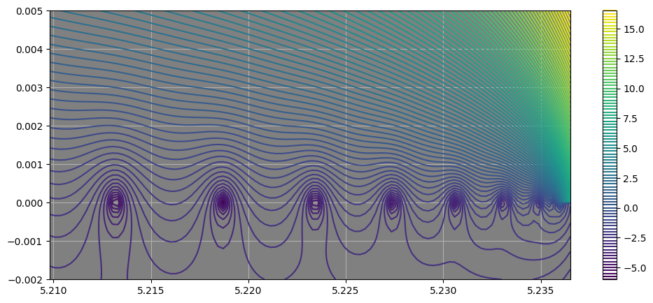
First zoom in#
And we can also zoom in further to the fundamental mode:
plotlogf(A.determinant,.9999*k_low,1.0001*k_low, -.0001,.0001, nu, outer, iref=100, rref=100, levels=100, figsize=(12,5))
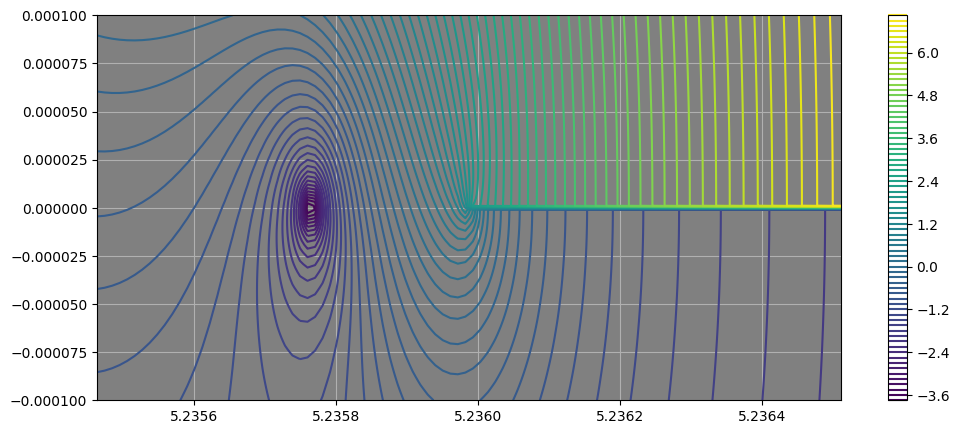
Next zoom in#
plotlogf(A.determinant,.9999*k_low, 0.99999*k_low, -.0001,.0001, nu, outer, iref=100, rref=100, levels=100, figsize=(12,5))
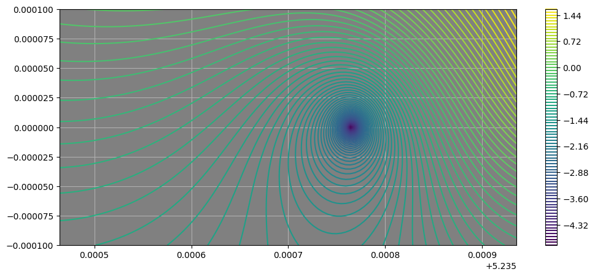
Final zoom in#
plotlogf(A.determinant,.999955*k_low, 0.99996*k_low, -.000005,.000005, nu, outer,
iref=100, rref=100, levels=100, figsize=(12,5))
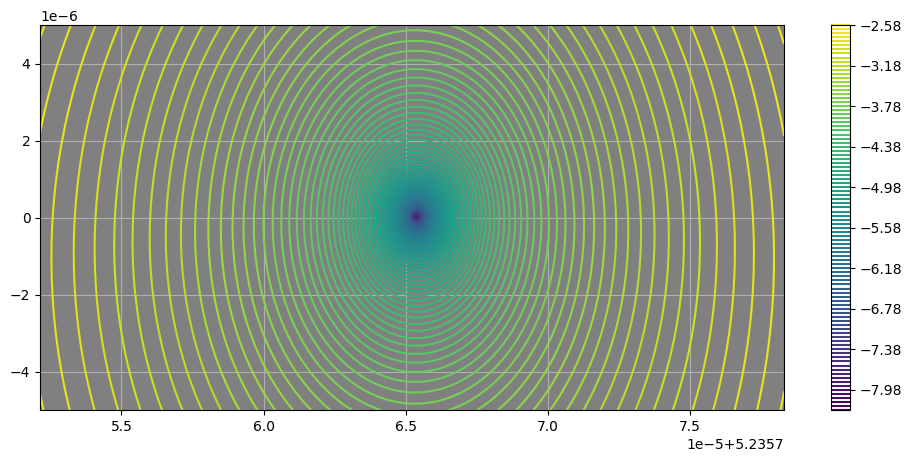
The dark spot in the zoomed-in plot indicates the location of the root of the determinant function, which we will refine with a Newton solver. Looking at the limits set in the plot command (in terms of fractions of k_low), we see that the real part of the root corresponding to the fundamental mode is located somewhere close to the middle between .999955*k_low and 0.99996*k_low. The imaginary part is small, as expected for a leaky mode.
Providing initial guesses to solver#
To obtain the propagation constant numerically, we refine the above-seen visual estimate with a Newton solver, i.e., with the initial guesses taken from the zoomed in plot above.
visual_guess = (.999955*k_low + 0.99996*k_low)/2
print(visual_guess)
5.235765226503359
beta1 = newton(A.determinant, visual_guess, args=(nu, outer), tol = 1e-15)
print("Scaled beta: ", beta1,
"\nResidual of determinant: ", abs(A.determinant(beta1, nu, outer)))
Scaled beta: (5.2357654056629634+2.6356530509847056e-08j)
Residual of determinant: 1.7060000182613857e-12
Converting to the non-dimensional \(Z^2\) eigenvalue#
Note that the beta1 above is not the physical propagation constant \(\beta\)
(rad/m), i.e., the “Scaled beta” printout label above is literal. Inside
transfer_matrix/state_matrix, the wavenumber k0 = self.k0 * self.scale
is already made dimensionless by the characteristic length \(L\) (scale), so
for (k0*n)**2 - beta**2 inside determinant to be dimensionally consistent,
the beta argument — and hence the root beta1 found by the Newton solver —
must also be the dimensionless quantity \(L\beta\), not \(\beta\) itself. (This
matches k_low/k_high above, which are themselves values of \(Lk_0n\), not \(k_0n\).)
Elsewhere in this repository, guided and leaky modes are instead found and classified using a nondimensional \(Z\)-variable — see the \(X\), \(Y\), \(Z\) variables introduced in Notebook 1.1 and Notebook 1.4, the \(Z\)-plane spectral structure discussed in Notebook 1.3, and its formal definition
given in the “non-dimensional Z-plane” section of
Notebook 2.2, where \(\beta\) here denotes the physical
propagation constant and \(n_0\) denotes the outer refractive index. Class methods sqrZfrom(..) and betafrom(..) are defined in terms of this physical \(\beta\). In order use sqrZfrom(..) to get the \(Z^2\)-value of beta_1, we must first undo the scaling already baked into the beta1, as done below.
beta1_phys = beta1 / A.scale # undo the L-scaling baked into determinant's beta argument
Z2_scalar = A.sqrZfrom(beta1_phys)
print("Z^2 =", Z2_scalar, "\nZ = ", np.sqrt(Z2_scalar),
"\nbeta = the physical propagation constant =", beta1_phys)
Z^2 = (0.0023283976667194395-2.759932213135152e-07j)
Z = (0.04825347319000004-2.859827521915164e-06j)
beta = the physical propagation constant = (5235765.405662963+0.026356530509847056j)
Assembling fields#
With beta1 we can assemble the fields using fields_matplot(..), which returns
plain Python callables suitable for matplotlib.
FsA below, is a dictionary of callable field functions returned by fields_matplot.
The 1D radial plot shows the oscillatory decay in the glass ring and the
outward-propagating tail in the outer air region, the hallmark of a leaky Bragg mode.
FsA = A.fields_matplot(beta1, nu, outer)
FsA contains two types of entries:
'Ez_rad'(and similarly'Hz_rad'): a callable of the scalar radius \(r\), returning the radial field profile.'Ez'(and similarly'Hz'): a callable of \((x, y)\), returning the 2D field with the \(e^{i\nu\phi}\) azimuthal factor included.
A.plot2D_contour(FsA['Ez'], figsize=(10,7))
fig, ax = A.plot1D(FsA['Ez_rad'], double_r=True, rlist=[400,10000,400], nu=nu, maxscale=True,
linewidth=1.5, color='k', figsize=(6,7))
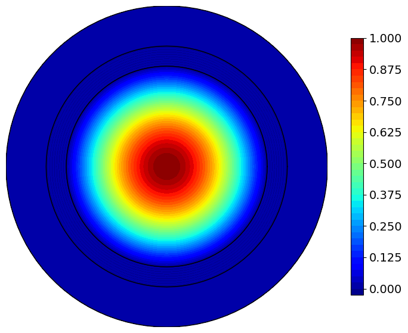
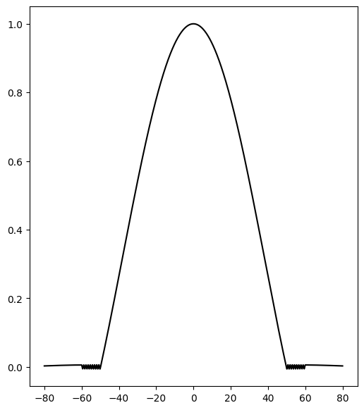
We will have more to say about tiny oscillations visible in the last plot (but not entirely clear in the plot above it).
The corresponding BraggExactVector example#
The workflow for BraggExactVector follows the same three steps, but there are
now six field components (\(E_z\), \(H_z\), \(E_r\), \(E_\phi\), \(H_r\), \(H_\phi\) in cylindrical coordinates \(r, \phi, z\)) rather than a single scalar field. The fundamental mode of the vector Maxwell model
is the HE\(_{11}\) mode, which requires \(\nu = 1\). Contrast this with the scalar fundamental mode which has \(\nu = 0\).
The shift from \(\nu=0\) to \(\nu=1\) reflects the vector nature of the field. This can be seen, for example, from the weakly guiding limit, where the fundamental mode field resembles a linearly polarized plane wave, such as the uniform Cartesian field \(E = E_x \hat e_x\). Such a field, when resolved into cylindrical components, gives \(E = E_r \hat e_r + E_\phi \hat e_\phi = E_x \hat e_x\) shows that \(E_r = E_x \cos \phi\) and \(E_\phi = -E_x \sin\phi\). Thus both \(E_r\) and \(E_\phi\) are proportional to \(e^{\pm i\phi}\). So this mode has ν = 1 in the cylindrical separation, not ν = 0. Thus, we expect the transverse cylindrical components \((E_r, E_\phi)\) of a field with a nearly uniform transverse direction to vary like \(e^{\pm i\phi}\), so for the fundamental vector leaky mode we set \(\nu = 1\) rather than \(\nu = 0\). Higher-order vector modes use \(\nu = 2, 3, \ldots\)
B = BraggExactVector(scale=1e-6,
ts=[5e-5, 1e-5, 2e-5],
ns=[1, 1.44, 1],
mats=['air', 'glass', 'air'],
wl=1.2e-6)
k_low = B.k0 * B.ns[0] * B.scale
k_high = B.k0 * B.ns[1] * B.scale
outer = 'h1'
nu = 1 # as noted above
The propagation constant for the vector case#
As before, we first perform a wide scan to survey mode locations across the leaky-mode region. Then a zoomed view resolves the fundamental mode location.
plotlogf(B.determinant, .995*k_low, 1.0001*k_low, -0.001, .005, nu, outer,
iref=100, rref=100, levels=100, figsize=(12,8))
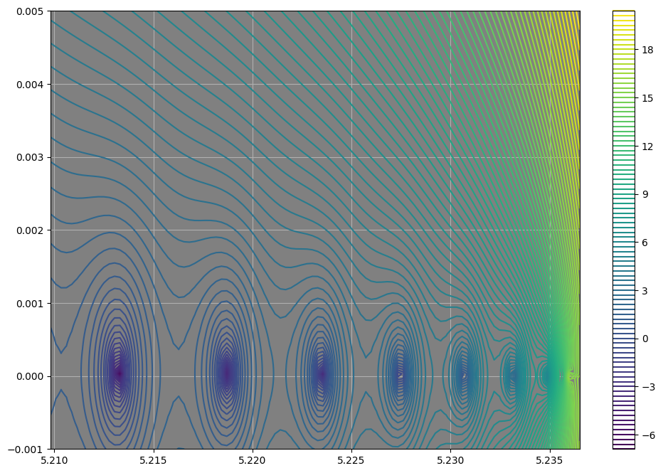
Zooming in on what appears to be first leaky mode gives us this plot:
plotlogf(B.determinant,.999955*k_low, 0.99996*k_low, -.000006,.000006, nu, outer,
iref=100, rref=100, levels=100, figsize=(12,5))
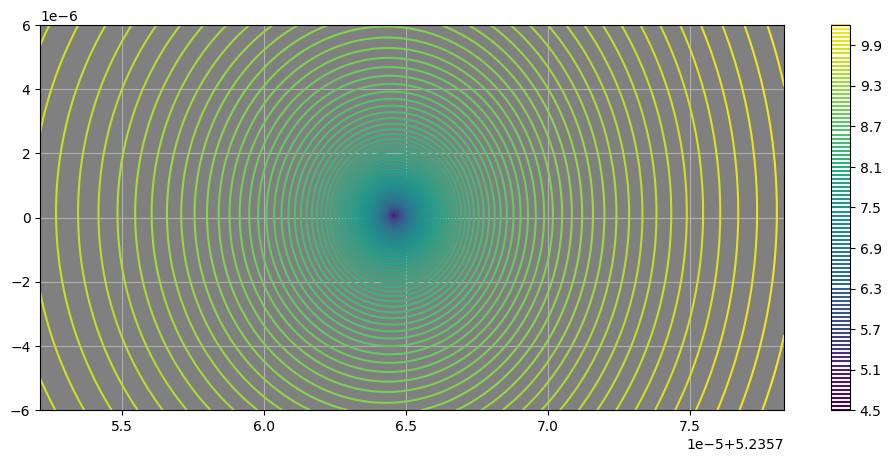
guess = np.array(.99995*k_low)
beta2 = newton(B.determinant, guess, args=(nu, outer), tol = 1e-15)
print("Scaled beta of vector case: ", beta2,
"\nResidual of determinant: ", abs(B.determinant(beta2, nu, outer)),
"\nCf. prior scaled beta of scalar case:", beta1)
Scaled beta of vector case: (5.235764623018904+6.891942784408688e-08j)
Residual of determinant: 5.342203243281762e-07
Cf. prior scaled beta of scalar case: (5.2357654056629634+2.6356530509847056e-08j)
As in the scalar case, beta2 is the \(L\)-scaled root of determinant, not the physical \(\beta\), so we again divide by B.scale before calling sqrZfrom —
matching the \(Z^2\)-plane search used for the vector case in
Notebook 2.2:
beta2_phys = beta2 / B.scale # undo the L-scaling baked into determinant's beta argument
Z2_vector = B.sqrZfrom(beta2_phys)
print("Z^2 =", Z2_scalar, "\nZ = ", np.sqrt(Z2_vector),
"\nbeta = the physical propagation constant =", beta2_phys,
"\nCf. prior beta of scalar case:", beta1_phys,
"\nCf. prior Z^2 of scalar case:", Z2_scalar)
Z^2 = (0.0023283976667194395-2.759932213135152e-07j)
Z = (0.048338320235773995-7.465007066540988e-06j)
beta = the physical propagation constant = (5235764.623018904+0.06891942784408689j)
Cf. prior beta of scalar case: (5235765.405662963+0.026356530509847056j)
Cf. prior Z^2 of scalar case: (0.0023283976667194395-2.759932213135152e-07j)
Clearly the scalar and vector models give very similar results for the fundamental mode, as expected.
Vector mode plots#
Facilties for plotting the vector fields are similar to the scalar case. The relevant methods are
fields_matplot, plot2D_contour, plot2D_streamlines, and plot1D.
fields_mpl = B.fields_matplot(beta2, nu, outer)
fields_mpl.keys()
dict_keys(['Ez', 'Ez_rad', 'Hz', 'Hz_rad', 'Er', 'Er_rad', 'Ephi', 'Ephi_rad', 'Hr', 'Hr_rad', 'Hphi', 'Hphi_rad', 'Ex', 'Ey', 'Hx', 'Hy', 'Sz', 'Sz_rad'])
The method fields_matplot returns a dictionary whose values are plain Python callables
of \((x, y)\) (or \(r\) for _rad variants) — suitable for matplotlib.
The available keys are:
'Ez', 'Ez_rad', 'Hz', 'Hz_rad',
'Er', 'Er_rad', 'Ephi', 'Ephi_rad',
'Hr', 'Hr_rad', 'Hphi', 'Hphi_rad',
'Ex', 'Ey', 'Hx', 'Hy', 'Sz', 'Sz_rad'
We can visualize the longitudinal \(E_z\) as a 2D contour plot as well as a 1D radial profile, as shown below.
B.plot2D_contour(fields_mpl['Ez'], figsize=(10, 10));
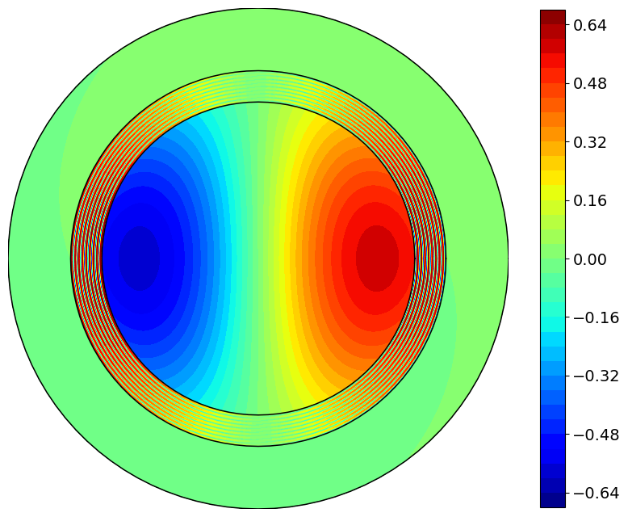
fig, ax = B.plot1D(fields_mpl['Er_rad'], double_r=True,
rlist=[400, 10000, 400], nu=nu,
maxscale=True, linewidth=1.5, color='steelblue', figsize=(10, 7))
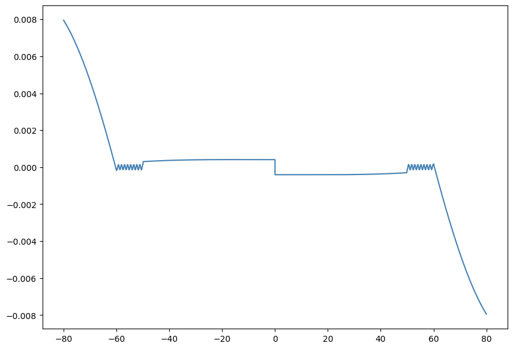
We may also display fields using 1D plots.
fig, ax = B.plot1D(fields_mpl['Ez_rad'], double_r=True, rlist=[400,10000,400], nu=nu, maxscale=True,
linewidth=1.5, color='k', figsize=(10,7))
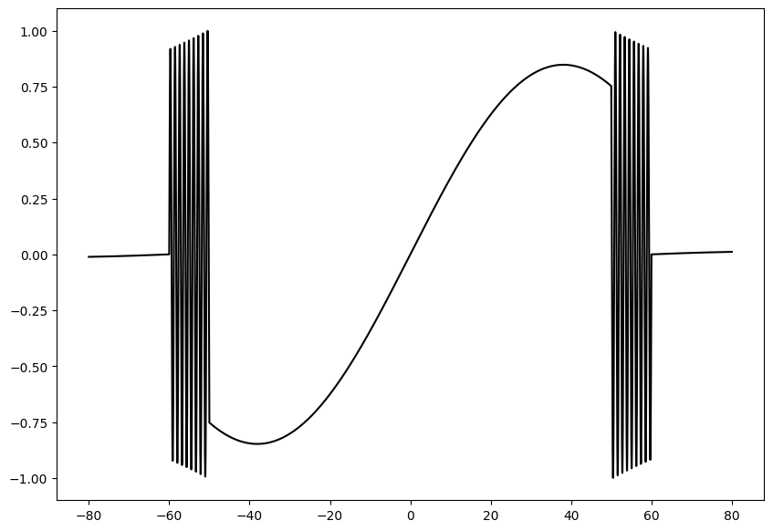
Finally, plot2D_streamlines draws the transverse electric field as a
streamlines plot overlaid on a color-filled contour of the field magnitude
(contourfunc). This is useful for visualizing the polarization structure
of the HE\(_{11}\) mode: the streamlines trace the direction of transverse
electric field across the fiber cross-section. Parameters seed_nr
and seed_ntheta control where streamlines are seeded.
mag = lambda x,y: np.sqrt(np.abs(fields_mpl['Ex'](x,y))**2 + np.abs(fields_mpl['Ey'](x,y))**2)
fig, ax = B.plot2D_streamlines(fields_mpl['Ex'], fields_mpl['Ey'], contourfunc=mag, seed_nr=[2,2, 2], seed_ntheta=16,
rho_linewidth=2, broken_streamlines=True,
maxlength=.3, plot_seed=False);
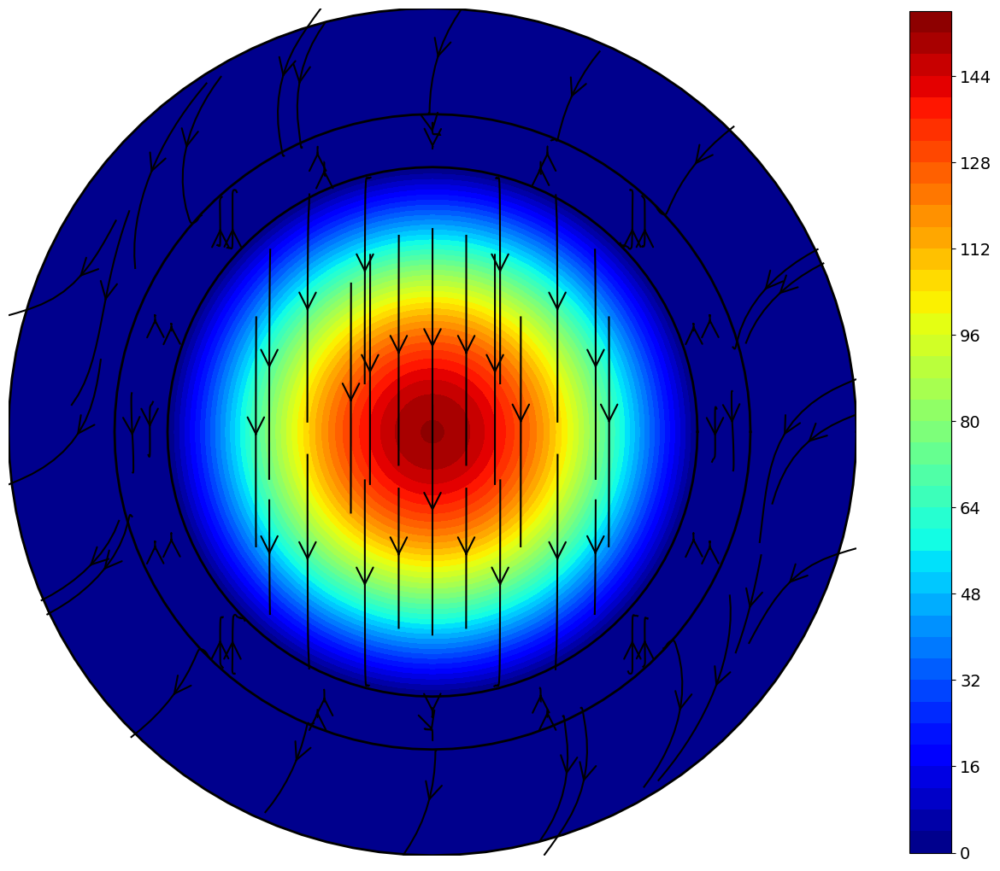
Further models#
The single concentric-ring construction used throughout this notebook can be extended to multiple glass rings separated by air. Such layered air/glass geometry — with \(N\) alternating anti-resonant layers — is also used as a simplified model for hollow-core, anti-resonant fibers (ARFs). Equivalent simplified Bragg fiber models to represent the more complex ARFs are common. The paper [3] contains more information, including analytic expressions, for such cases.
References#
[1] P. Vandenberge, J. Gopalakrishnan, and J. Grosek, “Sensitivity of Confinement Losses in Optical Fibers to Modeling Approach,” Optics Express 31(16), 26735–26756 (2023). Open Access, DOI: 10.1364/OE.495467
[2] P. Yeh, A. Yariv, and E. Marom, “Theory of Bragg fiber,” J. Opt. Soc. Am. 68(9), 1196–1201 (1978). DOI: 10.1364/JOSA.68.001196
[3] D. Bird, “Attenuation of model hollow-core, anti-resonant fibres,” Optics Express 25(19), 23215 (2017). DOI: 10.1364/OE.25.023215